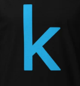

Profile

Visit kaggle
Projects
Insta betrayers list
Instagram Betrayer List Automation using Python & Selenium In this project, I developed an automated tool using Python and Selenium to identify and list users on Instagram who have unfollowed me — essentially creating a "Betrayer List." The script performs the following actions: Logs into Instagram using valid credentials. Fetches the list of followers and followings from the user's profile. Compares both lists to identify users who do not follow back (i.e., potential betrayers). Outputs the results in a clean format (console, CSV, or UI). This project showcases automation, web scraping, and data handling skills while working with real-world dynamic content. It also required managing login sessions, handling page loading delays, and mimicking human behavior to avoid Instagram's bot detection
Achievements
Add your certifications, hackathon wins, or other accolades here.
About Me
I am Akshat Agarwal, passionate about AI, Data Analytics, and Aerospace Engineering. My projects span machine learning, satellite data processing, and more. I believe in using technology to solve real-world problems.
Contact Me
You can reach out to me via email at your.email@example.com or connect through my social profiles above.